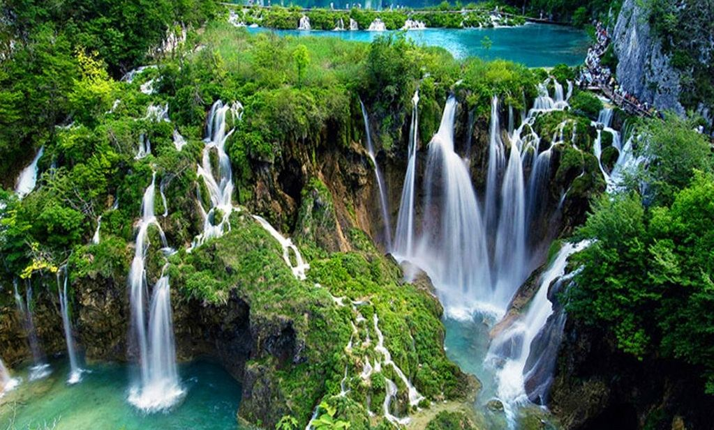

Što je nacionalni park?

Nacionalni park je zaštićeni prostor posebne ljepote i dobre prirodne očuvanosti u kojima obitavaju biljke i životinje, gdje su ljudski utjecaji ograničeni. Ističe se svojim jedinstvenim biljnim i životinjskim svijetom i prirodnim rijetkostima. U Hrvatskoj postoji 8 nacionalnih parkova.
- Brijuni
- Kornati
- Krka
- Mljet
- Paklenica
- Plitvička jezera
- Risnjak
- Sjeverni Velebit
Najveći parkovi na svijetu:
| Naziv | Država | Površina (km2) |
|---|---|---|
| Papahānaumokuākea | Hawaii | 1 510 000 |
| Sjeveroistočni Greenland | Greenland | 972 000 |
| Kavango Zambezi | Zambia, Botswana, Namibia, Zimbabwe i Angola | 519 912 |